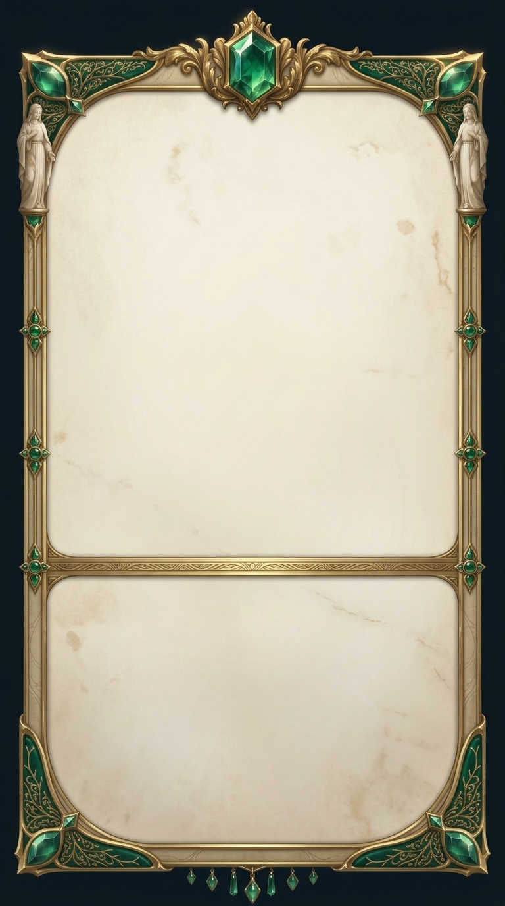
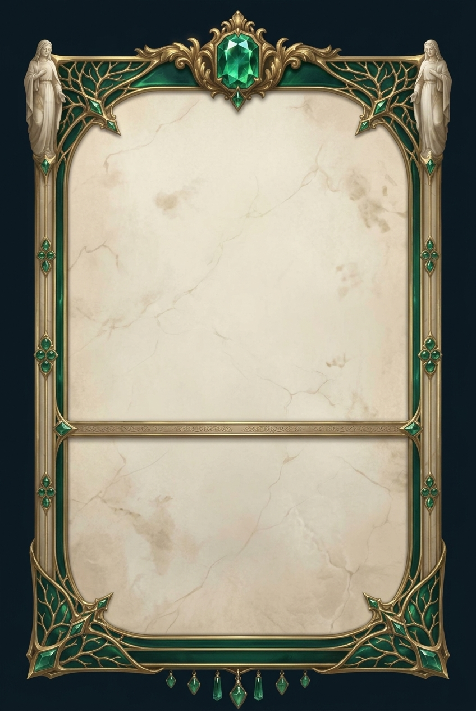
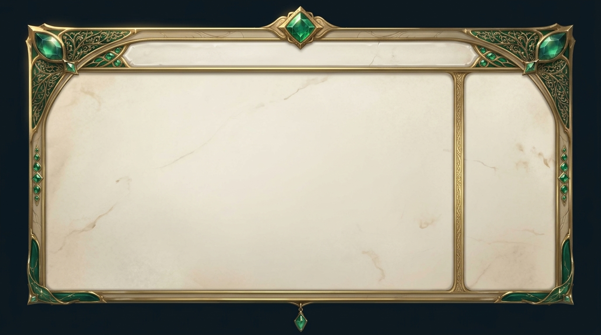
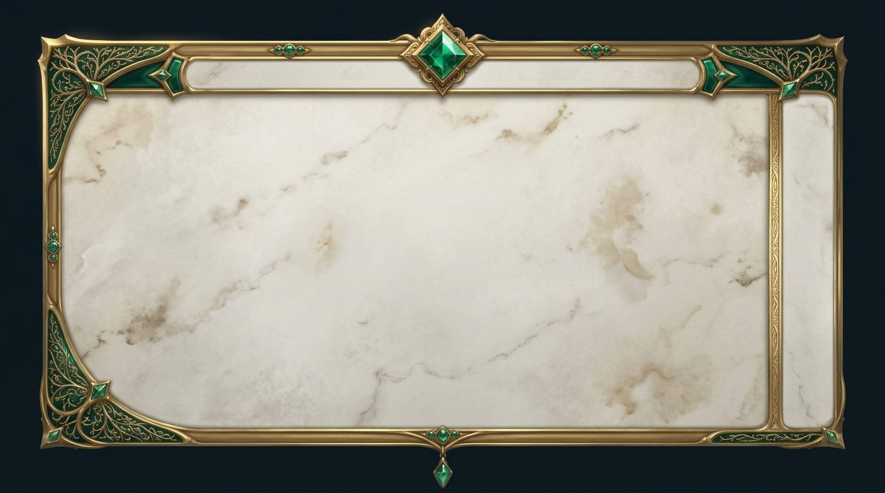

A — cornici mobile compagnia + arredo planner (V2, gate baseline)
4 immagini · budget 78→82/170 · refs: qwinr-1 + material-strip · campi PLAIN vuoti per contenuto vivo, ornamento solo sui bordi. ← indice
Mobile compagnia (leftWing, alto ~400×700)
mobile-compagnia-1 — due campi 55/40, crest centrale, statuette alate, rail gemmati, pendenti

mobile-compagnia-2 — più ricca: statue intere agli angoli, fascia smalto bassa, crest più grande

Arredo planner (centerStage, ~680×600)
planner-arredo-1 — header placca, campo grande, colonna forecast dx, angoli smalto densi

planner-arredo-2 — più pulito: campo enorme, angoli smalto leggeri, crest centrale
